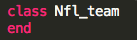
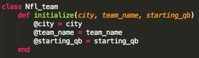
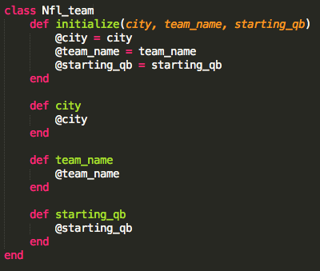
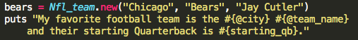

Ruby Classes
Week 5 has been all about creating Ruby classes. Classes are defined when you have a group of objects that need to be stored in a larger category. This may be hard to understand at first but I have posted a video and provided an example below to help you better understand.
For this example I would like to find out your favorite Football team and a little about them. First, we will define a class that we will name Nfl_team like so:
Next we will need to initialize our Nfl_object with a city, team name, and starting quarter back.
Now we will need to create some methods to return a value
At this point your methods will return the value associated with it. You can now insert these values into a nice string to be displayed for the user. Like so:

So that is how Ruby classes work in a nutshell. Hopefully now you have a general idea how classes work and can go create your own!